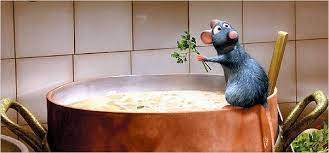
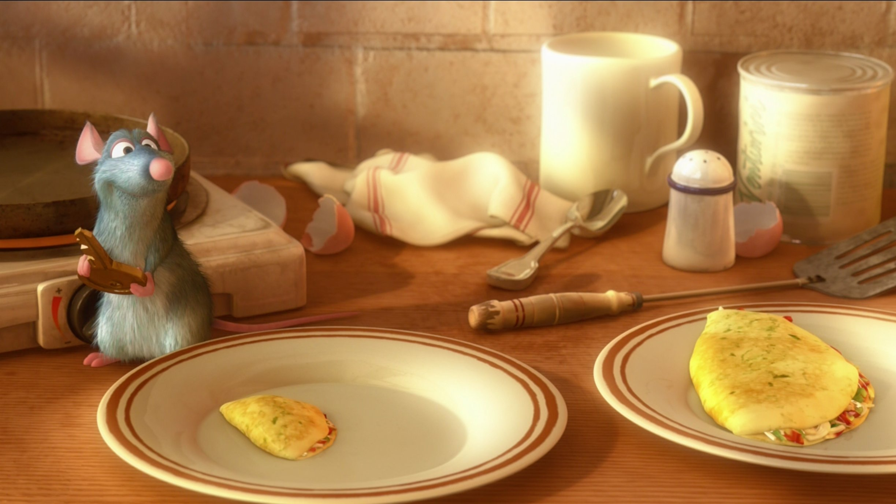

¡Bienvenido al recetario de Remy!

Te dejamos sus 3 recetas más famosas y como dice Gusteau ¡Cualquiera puede cocinar!
Ratatouille
Ingredientes
Para una fuente pequeña
- 1 zucchini
- 1 berenjena
- 3 tomates perita
- 1 diente de ajo
- 1/2 cebolla
- 1 pimiento morrón
- 1 lata de tomate cubeteado
- Sal
- Laurel
- Tomillo
- Pimienta
- Aceite de oliva
Como hacer Ratatouille paso a paso
1. Picar el ajo, la cebolla, el pimiento morrón bien chiquitos.
2. Cocinar en aceite de oliva, agregar sal. Cuando la cebolla esté transparente agregarle la lata de tomate cubeteado, el tomillo, el laurel y salpimentar. Tapar y dejar cocinar a fuego lento.
3. Cortar la berenjena, el zucchini y el tomate en rodajas lo más finas y parejas posibles.
4. Una vez cocida la salsa, triturar.
5. En una fuente apta para horno, poner la salsa en la base, bien distribuida.
6. Disponer las rodajas de verdura alternando como en la foto.
7. Rociar con aceite de oliva por arriba y llevar a un horno precalentado a 150° por el mayor tiempo posible. Una hora y media más o menos, hasta que las verduras queden bien tiernas
Sopa de trufas y cebolla
Ingredientes
- 3 cebollas grandes, cortadas en rodajas finas
- 2 cucharadas de mantequilla
- 4 tazas de caldo de pollo o vegetales
- 1/2 taza de vino blanco
- 1 ramita de tomillo fresco
- 1 hoja de laurel
- 1/4 de taza de crema espesa
- Sal y pimienta al gusto
- Trufas frescas o en conserva (al gusto), ralladas o en láminas finas
- Perejil fresco picado para decorar (opcional)
Como hacer la sopa de trufas y cebolla paso a paso
1. En una olla grande, derrite la mantequilla a fuego medio. Agrega las cebollas y cocina lentamente hasta que estén caramelizadas y de un color dorado oscuro. Esto puede tomar alrededor de 30-40 minutos, revolviendo ocasionalmente.
2. Una vez que las cebollas estén caramelizadas, añade el caldo de pollo o vegetales, el vino blanco, el tomillo y la hoja de laurel. Lleva la mezcla a hervor y luego reduce el fuego a medio-bajo. Cocina a fuego lento durante unos 15-20 minutos para que los sabores se mezclen.
3. Retira la hoja de laurel y la ramita de tomillo de la olla. Luego, utiliza una licuadora de inmersión o una licuadora convencional para procesar la sopa hasta obtener una consistencia suave. Si usas una licuadora convencional, ten cuidado al transferir la sopa caliente y licuar en lotes si es necesario.
4. Vuelve a colocar la sopa en la olla y agrega la crema espesa. Revuelve bien y calienta a fuego medio durante unos minutos hasta que la sopa esté bien caliente. Asegúrate de no hervir la sopa una vez que se haya agregado la crema.
5. Prueba la sopa y sazónala con sal y pimienta al gusto. Si deseas un sabor más intenso a trufa, puedes agregar un poco del aceite de las trufas en conserva.
6. Sirve la sopa en tazones individuales. Espolvorea las trufas ralladas o coloca láminas finas de trufas encima de cada porción. Si lo deseas, puedes decorar con un poco de perejil fresco picado.
Omellete a la Remy
Ingredientes
- 2 huevos
- 2 cucharadas de leche
- Sal y pimienta al gusto
- 2 cucharadas de mantequilla
- Opcional: relleno (queso, jamón, espinacas, champiñones, etc.)
Como hacer un omellete a la Remy paso a paso
1.En un tazón pequeño, bate los huevos junto con la leche. Asegúrate de mezclar bien hasta que los huevos estén completamente batidos. Puedes sazonar la mezcla con sal y pimienta al gusto.
2.Calienta una sartén antiadherente a fuego medio-alto. Añade la mantequilla y deja que se derrita y cubra el fondo de la sartén.
3.Vierte la mezcla de huevos en la sartén caliente. Con una espátula, comienza a mover los huevos desde el borde hacia el centro de la sartén. Esto ayudará a que se cocinen de manera pareja.
4.Si deseas agregar algún relleno a tu omelette, ahora es el momento. Puedes esparcir queso rallado, jamón picado, espinacas o champiñones en un lado de los huevos.
5.Una vez que los huevos estén casi cocidos pero aún un poco líquidos en la parte superior, dobla el omelette por la mitad con la ayuda de la espátula.
6.Cocina el omelette durante unos segundos más, solo para que el relleno se caliente y los huevos se terminen de cocinar.
7.Retira la sartén del fuego y transfiere el omelette a un plato. Puedes adornarlo con un poco más de queso rallado o hierbas frescas si lo deseas.